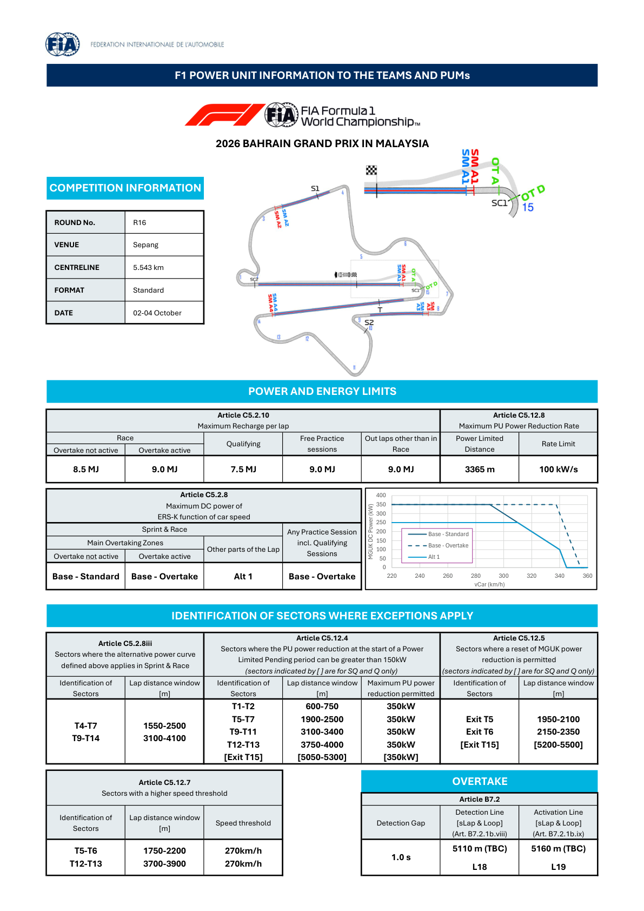
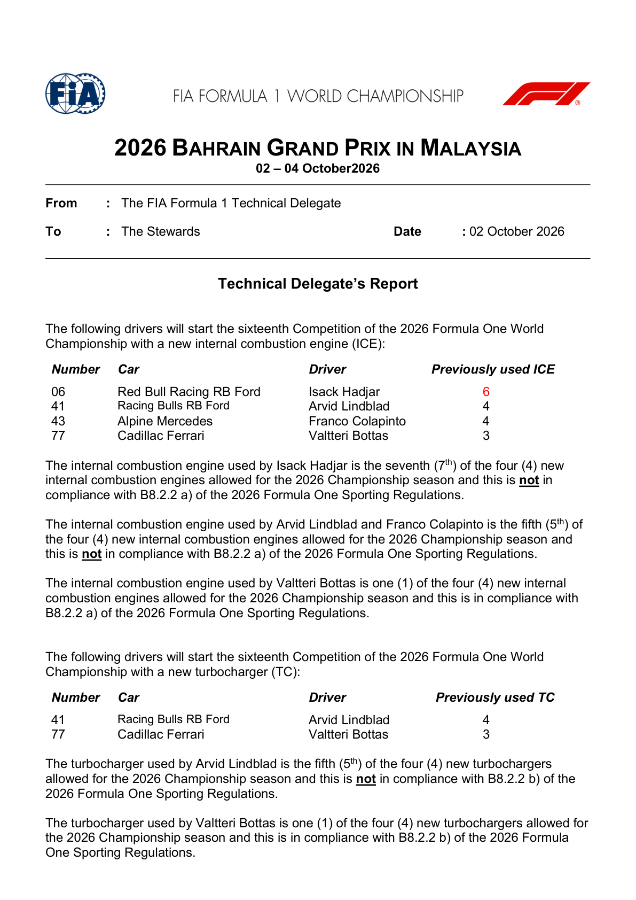
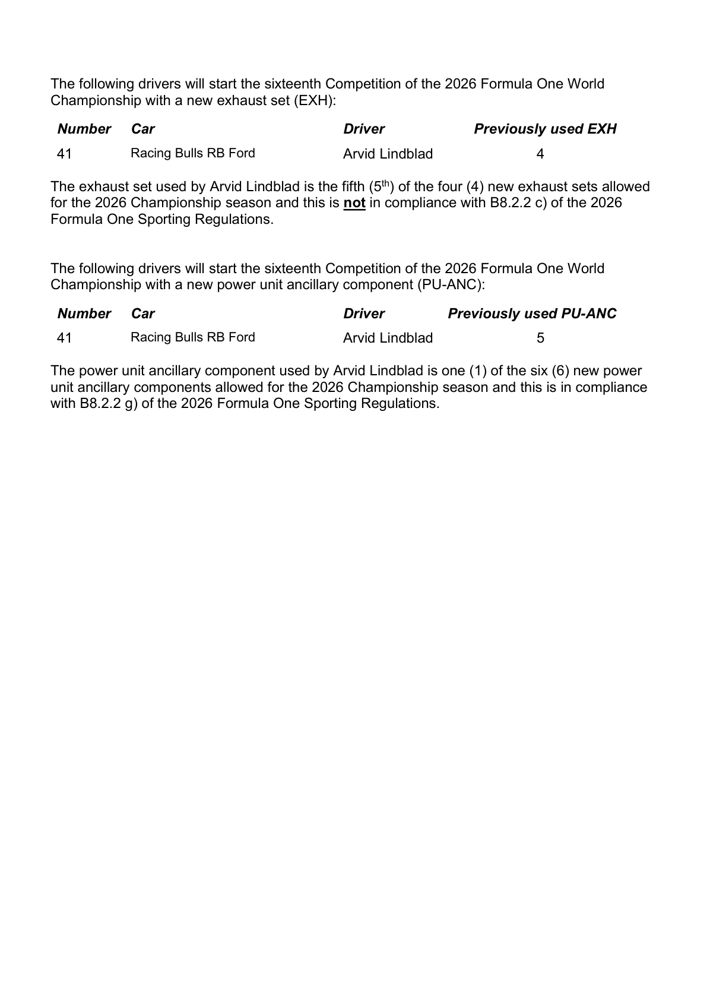
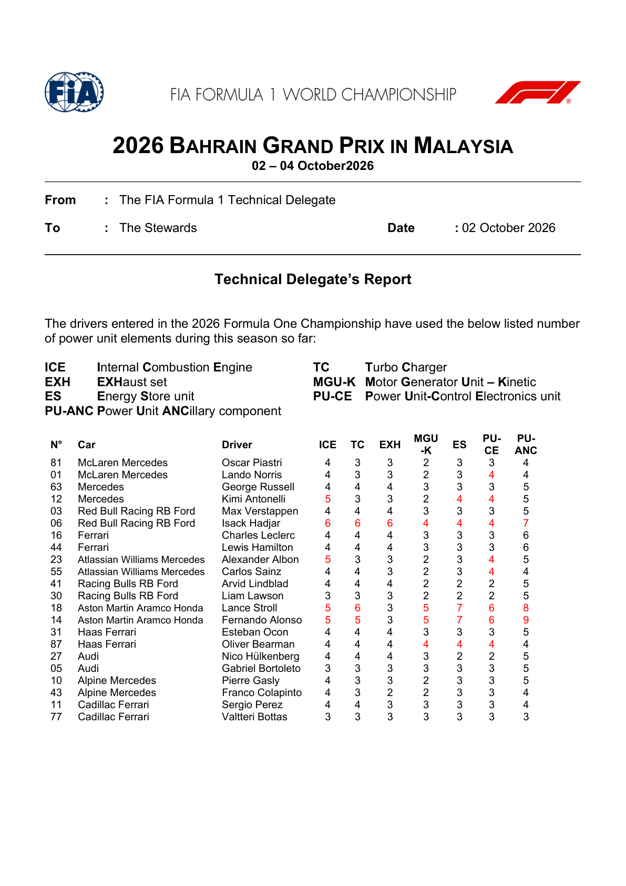
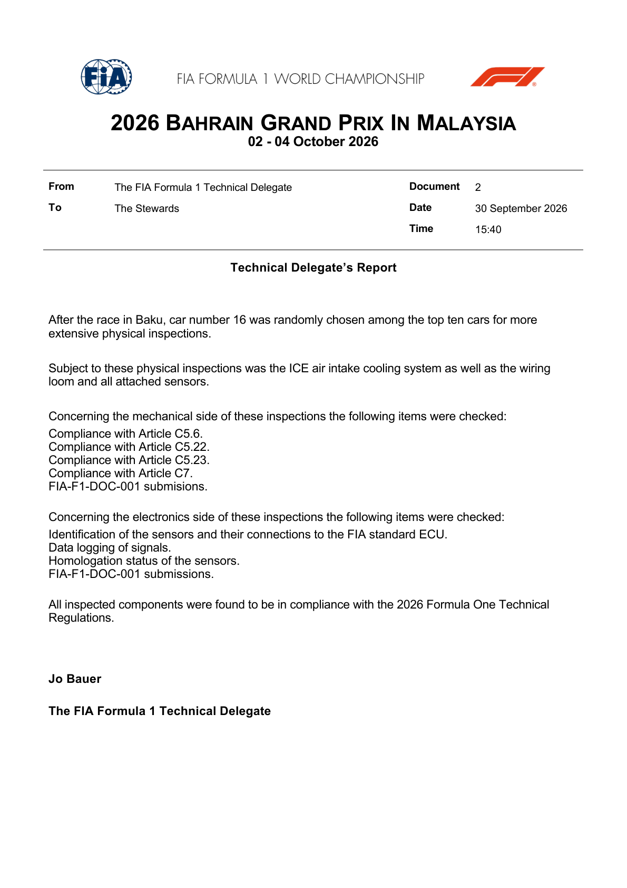

Power Unit & Overtake
Sepang's event-specific recharge, ERS-K and Overtake limits; TBC line distances remain as published.
FIA official power-unit documents
Official source; curated transcription may await review. Linked PDFs are the authority. Discovery does not extract or verify numeric values, and does not replace the curated material below.
Last successful FIA document discovery: 2026-10-02T11:39:34.173048+00:00. This is retrieval time, not issue time; newer revisions may exist.
- 2026_bahrain_grand_prix_in_malaysia_-_new_pu_elements_for_this_competition.pdf (official PDF)
- 2026_bahrain_grand_prix_in_malaysia_-_pu_elements_used_per_driver_up_to_now.pdf (official PDF)
- 2026_bahrain_grand_prix_in_malaysia_-_power_unit_information.pdf (official PDF)
- 2026_bahrain_grand_prix_in_malaysia_-_post-race_checks_on_car_number_16_2026_azerbaijan_gp.pdf (official PDF)
What changed for 2026
- Roughly a 50/50 split between internal combustion and electrical power.
- The MGU-H is gone; the MGU-K is substantially more powerful.
- 100% sustainable fuel.
- Overtake is a separate electrical-power aid with an event-specific energy allowance defined by the FIA map.
- Active aerodynamics let the cars switch between a high-downforce and a low-drag straight-line mode.
What to look for at this circuit
- Deployment matters most where the full-throttle run is longest — a long lap like this one puts a premium on efficient energy management.
- Energy-rich layouts let drivers deploy more freely; energy-limited ones force lifting and coasting.
- Overtake detection and activation points are defined per circuit in the FIA document.
- Practice and qualifying generally run a more permissive power curve than the race — expect Sunday straight-line speed to look weaker than Saturday's.
FIA Power Unit Information — page 2

Maximum recharge per lap (Article C5.2.10)
| Session / condition | Maximum recharge |
|---|---|
| Race — Overtake not active | 8.5 MJ |
| Race — Overtake active | 9.0 MJ |
| Qualifying | 7.5 MJ |
| Free practice | 9.0 MJ |
| Out-laps other than in the Race | 9.0 MJ |
Power limits and ERS-K curves
- Power-limited distance: 3365 m; maximum PU power-reduction rate: 100 kW/s (Article C5.12.8).
- Sprint and Race, main Overtaking Zones: Base — Standard with Overtake inactive and Base — Overtake when active.
- The alternative Alt 1 curve applies in T4–T7 (1550–2500 m) and T9–T14 (3100–4100 m) (Article C5.2.8iii).
- Every practice session, including qualifying, uses Base — Overtake throughout the lap.
Power-reduction exceptions (Article C5.12.4)
- Up to 350 kW reduction is permitted at the start of a Power Limited Pending period in the following windows:
- T1–T2 (600–750 m); T5–T7 (1900–2500 m); T9–T11 (3100–3400 m); T12–T13 (3750–4000 m).
- The bracketed exit T15 (5050–5300 m) entry is marked for Sprint Qualifying and Qualifying only; this calendar has a standard weekend.
MGU-K reset and speed-threshold windows
Permitted MGU-K power-reduction resets (Article C5.12.5)
- Exit T5: 1950–2100 m.
- Exit T6: 2150–2350 m.
- The bracketed exit T15: 5200–5500 m reset is marked for Sprint Qualifying and Qualifying only; this calendar has a standard weekend.
Higher-speed-threshold sectors (Article C5.12.7)
- T5–T6: 1750–2200 m, 270 km/h.
- T12–T13: 3700–3900 m, 270 km/h.
Source: FIA Power Unit Information, page 2. Values and the source version were read from the published screenshot; retrieval time is not treated as the document's issue date.
Carry-over technical check — compliant, not a penalty
Document 2, dated 30 September, records that Leclerc's Car 16 was selected after Baku for detailed checks of its ICE air-intake cooling system, wiring and sensors. All inspected components complied with the 2026 technical regulations. This is a post-Azerbaijan inspection published in the Sepang event folder, not a new Sepang PU allocation list.
FIA Technical Delegate's report, Document 2.
PU elements used — Friday 08:30 snapshot
FIA Document 9, issued 2 October at 08:30 MYT, records season-to-date usage, not remaining allocation or final post-Sepang totals. Counts alone do not establish a new event penalty; use the relevant stewards' ruling. ICE: engine; TC: turbocharger; EXH: exhaust; MGU-K: kinetic motor-generator; ES: energy store; PU-CE: control electronics; PU-ANC: ancillary components.
| No. | Driver | ICE | TC | EXH | MGU-K | ES | PU-CE | PU-ANC |
|---|---|---|---|---|---|---|---|---|
| 81 | Oscar Piastri | 4 | 3 | 3 | 2 | 3 | 3 | 4 |
| 1 | Lando Norris | 4 | 3 | 3 | 2 | 3 | 4 | 4 |
| 63 | George Russell | 4 | 4 | 4 | 3 | 3 | 3 | 5 |
| 12 | Kimi Antonelli | 5 | 3 | 3 | 2 | 4 | 4 | 5 |
| 3 | Max Verstappen | 4 | 4 | 4 | 3 | 3 | 3 | 5 |
| 6 | Isack Hadjar | 6 | 6 | 6 | 4 | 4 | 4 | 7 |
| 16 | Charles Leclerc | 4 | 4 | 4 | 3 | 3 | 3 | 6 |
| 44 | Lewis Hamilton | 4 | 4 | 4 | 3 | 3 | 3 | 6 |
| 23 | Alexander Albon | 5 | 3 | 3 | 2 | 3 | 4 | 5 |
| 55 | Carlos Sainz | 4 | 4 | 3 | 2 | 3 | 4 | 4 |
| 41 | Arvid Lindblad | 4 | 4 | 4 | 2 | 2 | 2 | 5 |
| 30 | Liam Lawson | 3 | 3 | 3 | 2 | 2 | 2 | 5 |
| 18 | Lance Stroll | 5 | 6 | 3 | 5 | 7 | 6 | 8 |
| 14 | Fernando Alonso | 5 | 5 | 3 | 5 | 7 | 6 | 9 |
| 31 | Esteban Ocon | 4 | 4 | 4 | 3 | 3 | 3 | 5 |
| 87 | Oliver Bearman | 4 | 4 | 4 | 4 | 4 | 4 | 4 |
| 27 | Nico Hulkenberg | 4 | 4 | 4 | 3 | 2 | 2 | 5 |
| 5 | Gabriel Bortoleto | 3 | 3 | 3 | 3 | 3 | 3 | 5 |
| 10 | Pierre Gasly | 4 | 3 | 3 | 2 | 3 | 3 | 5 |
| 43 | Franco Colapinto | 4 | 3 | 2 | 2 | 3 | 3 | 4 |
| 11 | Sergio Perez | 4 | 4 | 3 | 3 | 3 | 3 | 4 |
| 77 | Valtteri Bottas | 3 | 3 | 3 | 3 | 3 | 3 | 3 |
All 22 rows visually reviewed against FIA Document 9, page 2; the full screenshot is in the source reader below.
Official FIA document screenshots
Automatically rendered from the official PDFs. These figures do not update or verify the curated numeric transcriptions above. Unchanged pages already illustrated above are not repeated here.
2026_bahrain_grand_prix_in_malaysia_-_new_pu_elements_for_this_competition.pdf
PDF retrieved 2026-10-02T11:39:43+00:00; this is not its issue date.


2026_bahrain_grand_prix_in_malaysia_-_pu_elements_used_per_driver_up_to_now.pdf
PDF retrieved 2026-10-02T11:39:43+00:00; this is not its issue date.

2026_bahrain_grand_prix_in_malaysia_-_post-race_checks_on_car_number_16_2026_azerbaijan_gp.pdf
PDF retrieved 2026-10-02T11:39:43+00:00; this is not its issue date.
